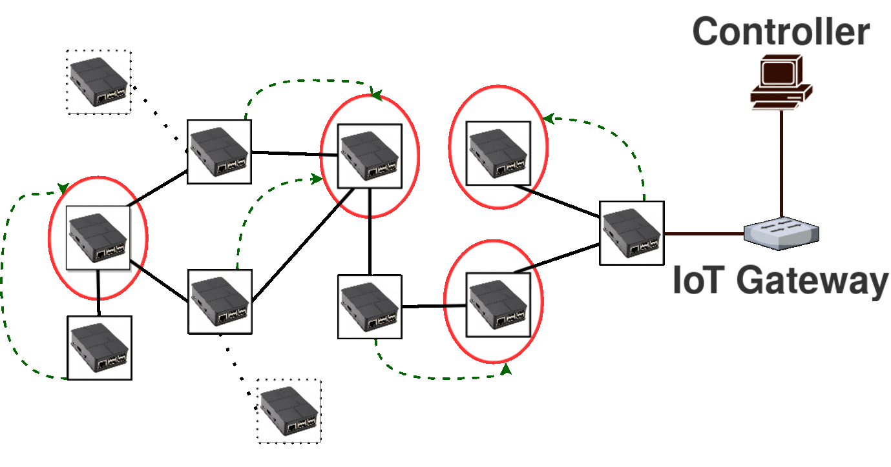

(Click on the images* for the animated image)
Fault Tolerance |
Elastic Auto-scalability |
Fast Flow Installation |
|---|---|---|
|
Aloe readjusts the μC containers in case any failure occures.  |
Depending on the topology change Aloe finds suitable placement of μC |
The μCs are placed near to the data plane devices. Therefore, IoT short flows are installed quickly. |
LightWeight μC Migration |
QoS Ensuring μC Operation |
Controller Application Independent |
|
Aloe uses lightweight μC migration using "Docker" containers. Thus can ensure lower down time, low migration overhead. |
Aloe can achieve resource reservation of μC. Thus Aloe can ensure QoS for control plane even in high load scenarios. |
Aloe does not depend on the control plane application. By using Docker Aloe can support any type of controller application. |